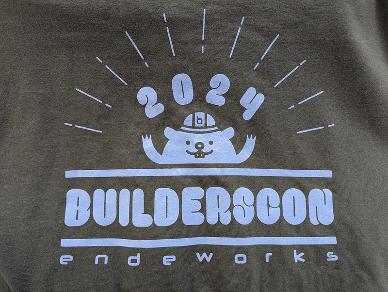

作り、造られ、創る

作り、造られ、創る
今日はbuilderscon 2024の開催日でした。
自分が立ち上げて（でも心折れて開催しなくなった）イベントを、自分が関わらないところで続けてくれるというのは、なんとも感慨深いものです。少なくとも俺のやろうとしてたことは意味があったんだな、という気持ちにさせられました。
開催にこぎつけた@nasa9084さん、ありがとう！他のスタッフのみなさまも本当にお疲れさまでした。
さて、今回私は運営にはTシャツのスポンサー以外一切ふれてないのですが、実は開催前日の時点でスケジュールに穴があくかもしれないという話をSlackで聞いたので、それを聞いた私はすぐさまGoogle Docsで原稿を書き始めました。で、すぐ書きおわったのですが、その時にはもうonkさんとsongmuさんが代役に決まったので私の話は無事オクラ入りになりました。
ならまあ、供養しとこうかな、ということでここに載せることにしました。
ちなみに穴が空きそうな時間は40分だったので、技術のテーマではその時間を埋めれる自信がなかったので、歴史とエモい話に振ってみた次第です。
ではどうぞ
作り、造られ、創る
今回はbuildersconというものを作った時の気持ちについて話したいと思います。
そもそも僕は2005年くらいからカンファレンスというものに関わり始めて、2008年～2009年あたりから主宰的な立場でプログラミング言語関連の活動をしていました。
気づいたらこれはもうはるか昔ですね。
で、結局2019年くらいまで10年くらい主宰として自分のカンファレンスを切り盛りして、コンテンツとかの方向性を調整したりしてました。
そもそもなんでこういうことをやりだしたのかというと、このころのカンファレンスって正直技術の大喜利みたいな感じで、発表者が誰もかれも発表するときに作る喜びに溢れてたんですね。作る情熱に溢れた人の話というのは、たとえそれがどんなにくだらない話であったとしても聞いている人の心を動かしてくれるものなんですよね。
エンジニアたちの「俺はこんな面白いものを作ったぜ！」「こんな失敗しちゃったぜ！」という話をするときの顔はとても晴れやかで素敵でした。そして僕はそういう話が大好きだったので、ずっと主宰をやっていました。
まぁ実を言うと、主宰をやっているとあまりトークを見に行く時間がなくてみんなが絶賛しているトークも見たことがなかったりします。
ですが、私の場合、10年くらいずっとLTの司会はやっていたので、LTはよく見ていて、そこでたくさんのエンジニアたちの楽しいオーラを浴びてきました。
LTは5分ってひとつのネタを突き詰めてそれをほぼで落ちでドン！とやるパフォーマンスなんで、趣味や拘りを全面に押し出したトークが多かったので本当に面白い枠でした。僕がやってた時もここだけは必ず満員御礼でしたね。
LLMとか出てくる前にマインスイーパーを自動的に解かせる話とか、wとWの文字だけでコード書けるようにするとか、本当に面白い話が多かったです。
あと今はわりと有名なM氏が最初に私がやってたYAPC::Asia TokyoでLT登壇したときのネタは、ただただある有名人のサスペンダーをブラウザ上で動かすってだけですからね。
でもそれだって立派な作る行為で、彼は作る情熱を昇華させて、それで観客を楽しませてくれたわけです。
作る喜びというのは別にプログラミングに限った話じゃなくて、例えばYAPC::Asia Tokyo 2015のネットワークを設計・運用してくれたCONBUの皆さんのネットワーク高速設置パフォーマンスなんて、ネットワークの構築という「作る」行為を演劇に近い創作にまで昇華させたいい例だと思います。
まぁそんなわけでこういう話が面白くて私はずっとやってきました。
さて、私が主宰をしていた10年間の間、私や、観客の皆様の多くの方々が在籍しているIT業界は怒涛の勢いで成長し、そしてその帰結のひとつとして、急速に工業化していきました。
そしてその事実を映し出すかのように、少しずつ我々が執り行うカンファレンスで発表される内容も変わっていきます。
これを一口で説明するのは難しいのですが、乱暴に言うと、最初はプログラミングっておもしろいぞ～、じゃあプログラミングでおもしろいものや便利なものを作って他の人にも見せちゃおう！という流れだったのが、「プログラミングを使ってビジネスをスケールさせるには？」とか、「プログラミングをする際の効率を極限まであげる方法とは？」みたいな話が増えてきました。
これらのテーマが一概に悪いと言っているわけではないです。プログラマーの仕事という側面から考えた場合、これらは避けて通れない命題ですね。
例えば
- RoRみたいなフレームワークで開発フローを効率かするとか
- エンジニアの短期目標や進捗の管理を行うスクラムとかとそのためのツールとか
- サーバーの管理工数減らしたいからKubernetesみたいなヤマタノオロチみたいな化け物をうまく使う話とか
仕事としてこの業界にいる以上、これらは避けて通れない話題です。だって我々は究極的には生活のためにこれを仕事にしており、なおかつ我々がいる業界というのは基本的に職人が一品ものを作る業界ではなく、建築や製造業のようにチームを組み、その上で社会や経済を回す仕組みを作っていく仕事ですから。
で、これはこれでね、もちろん面白い話もたくさんあるのですが、今まで話してきたように、基本的には物を作る話ではないのです。ビジネスを加速する話だったり、コストを削減する話だったり、開発効率をあげる話であったりするわけです。
これらはもはや資本主義的な行動様式の話なんですね。
工業化していくIT業界に身を置くプログラマは当然その工業化に追従していかなければいけないから、身近な話題としてこういう話に興味があるのは当然です。そしてそれについて共有して知見を得るのはもちろんいいことです。
こういう会をサポートしてくれる企業はもちろん資本主義の世界で競争しているわけですから、そういう話題や、それについて詳しい人材を得るために協賛してくれるのもわかりますし、大変ありがたいことです。
繰り返しになりますが、これらの話題が悪いわけじゃないです。むしろ需要はあるし、いい話もたくさんあると思います。そしてそういう話も聞いていきたいと思います。
でも、カンファレンスに来て聞ける話の8割がそういう話、という状況にはなってほしくない。
最初に言ったように僕が主宰をしていて見たいのは物を作る人の情熱なんですよ。
作る。
あなたが悩み、苦しみ、挫折したり、工夫した結果成功したりして、作ったそれを見たい。その話を聞きたい。
その便利な、いや、便利じゃなくてもいい、くだらないものを思いついたところから、なんらかの形で完成させてビルドするところまでこぎつけたあなたの情熱の炎を僕らにも少しだけわけてほしい。
もう少し突き詰めると、作るという行為はプログラミングにかぎったはなしではありませんよね。
僕はここ5年くらい職業プログラマをやっていませんでした。
その間に紆余曲折あって、他の作る行為に没頭してました。
まずはパンを作ること。材料、水分量、グルテンの生成、成形、焼成。作りたいパンのイメージから始め、これらの工程を経てパンを焼くわけですが、全ての工程に理屈があり、本当に欲しいものを焼くには全ての工程に工夫とコツが必要です。失敗を繰り返し、本質をつかみ、自分の欲しい（創りたい）パンに近づけるまで（作る）工程を繰り返す。
サワードウを焼くために初めて小麦粉と水だけで天然酵母をしこんだのが2021年5月のことでした。それから約1年7ヶ月、目標だった100個に向けてパンを焼き続け、2022年12月26日にようやっと達成しました。medium.com
また1年くらい前から3Dプリンティングにドはまりしており、連載記事を書くまでになっております。3Dプリンティングもモデリング、出力、組み立て、全ての工程で悩み、苦しみ、そしてほとんど失敗しますが、何十回もやりなおしていると段々わかってきます。そしてパーツの作り方がわかり、あらたなものを創れるようになります。
このように、作るという行為は当たり前ですがプログラミングに限った話じゃありません。ですので、buildersconにはいろんな分野のいろんな技術の話の人が集まってほしいと思って、このカンファレンスを始めました。
builderscon 最初の開催時にはまだLLMがない時代のゲームのAIについてききました。
数年前にはカミオカンデの話も聞けました。
いつかロケット業界の人を是非呼んできてほしいと思います。そして異業種での交わり、作る情熱の共有をしていただきたいと思います。
作る。
造る。
創る。ビルドする。
そういう人達の話を持ち寄ってほしい。ビルドする人達、ビルダーたち、その人達のbuildersconです。今後も是非作る人達の情熱を感じられる場所に育てていってください。
ありがとうございました。